照片
推薦人姓名職稱／身分
（推薦文字待補，約 30–50 字）
以上照片都出自書中，攝影：黃仕傑。滑鼠移上去可以暫停。
新書簡介
在 AI 什麼都能回答的年代，答案來得太快，人與人之間的溫度卻越來越淡。孩子需要的，是一段放下螢幕、親手觸摸真實世界的時間。走進森林，要先學會安靜下來、耐心等待；發現一隻偽裝的守宮時忍不住驚呼，也學著把最好的位置讓給身邊的人；牽著大人的手走過夜晚的步道，害怕和好奇都有人一起接住。在自然裡，孩子認識自己的感受，練習同理另一個生命，也學會「只看不帶走」的選擇與責任。
這本書集結熱血阿傑走遍臺灣與世界的生態現場：從家門口的森林與步道、日本的鍬形蟲、泰國清邁的雨林、婆羅洲的少女營地與神山，到馬達加斯加、秘魯與澳洲。每一站都有現場故事、細膩的觀察和全彩攝影，讓大人和孩子一起出發，重新找回人與人、人與自然之間真實的連結。
提琴步行蟲、五角大兜蟲、大王花、枯葉角蟾、長頸捲葉象鼻蟲……翻開書頁，就像跟著阿傑一起探險。看完以後，下次全家出門散步，孩子會忍不住多看身邊的草叢和樹梢一眼。
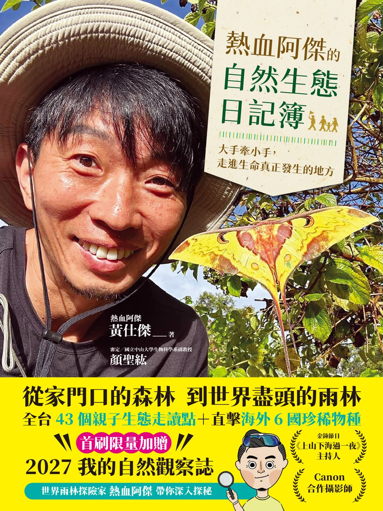
不鼓勵採集與帶走，從觀察方法和旅行心態出發，先從身邊的公園、步道開始。
從演化、棲地到人類活動，說明一隻昆蟲、一片森林如何和整個環境互相牽動。
夜間觀察、追蹤足跡、雨林迷途與在地交流，知識有了節奏，也有情感。
每個臺灣走讀點都附上交通建議、是否需要購票和不可錯過的生態觀察。
首刷限定贈品
首刷限定加贈別冊A5（14.8 × 21 cm）｜全彩 32 頁｜附 2027 年曆
這個週末要去哪裡玩？翻開這本小冊子就有答案！
搭配阿傑親攝照片、臺灣走讀去處和書中對照頁碼，翻開就知道這個月可以去哪裡走走！每個月份，傑哥都幫你挑好一位當月主角，照著建議出門走走，在遠方的也列入夢想清單吧！
把你看到的、拍到的、美好的紀錄都收進月曆裡，蓋個紀念章，一年過完，這就是專屬於你和家人朋友，獨一無二的真實自然圖鑑！
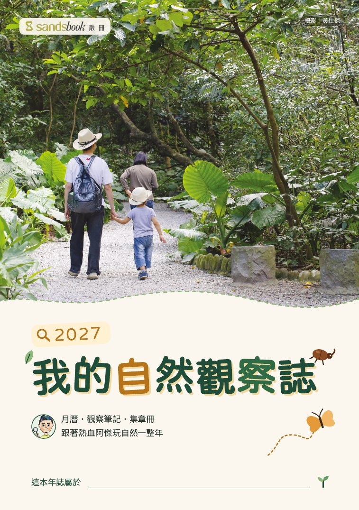
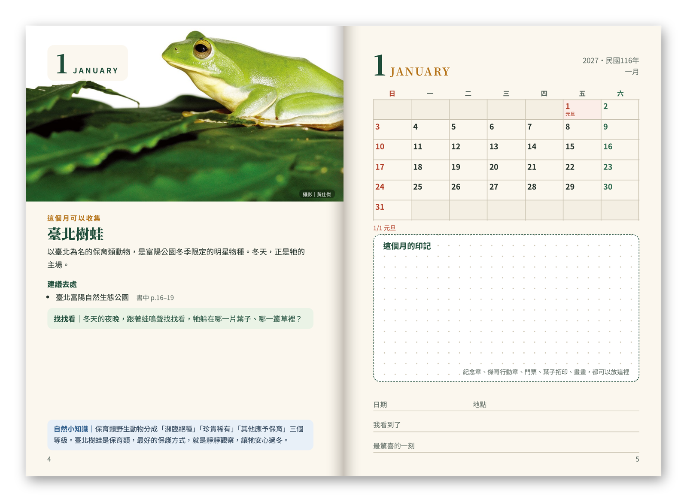
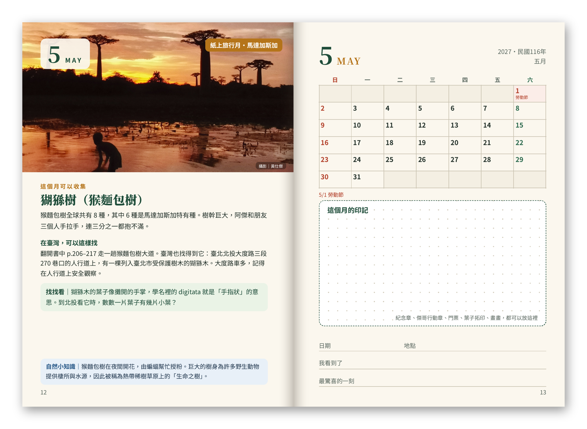
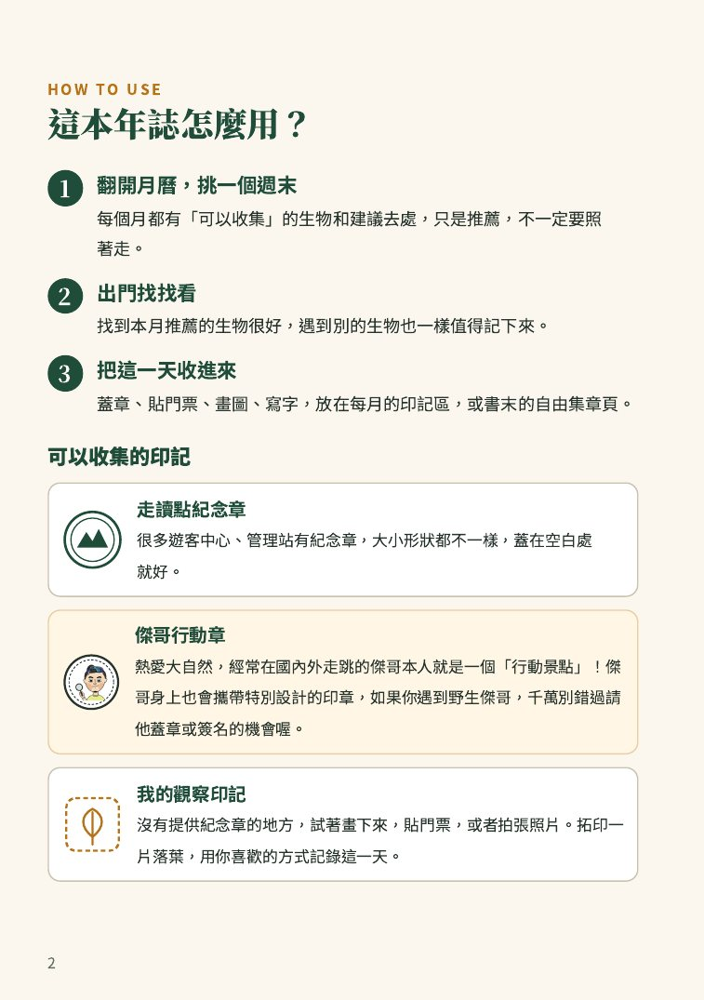
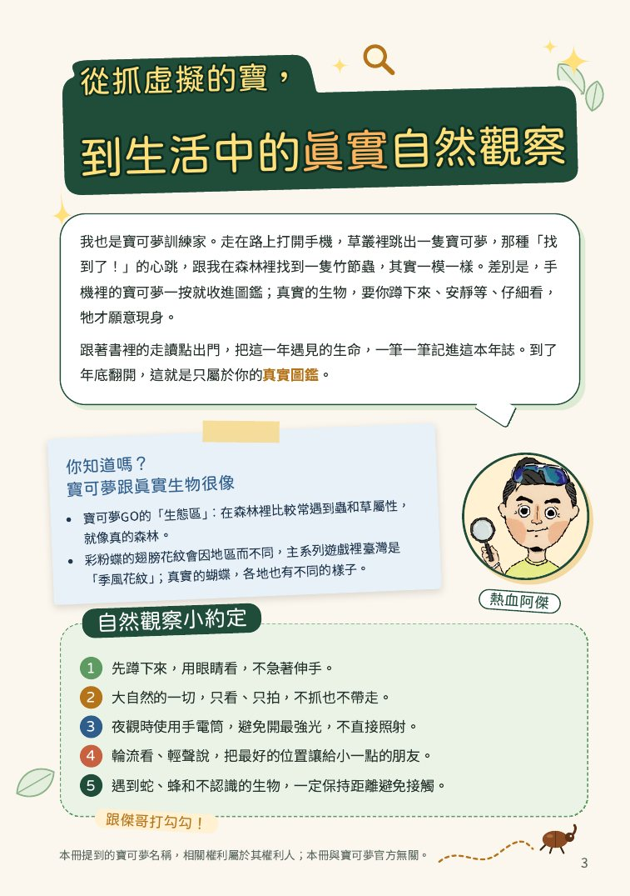
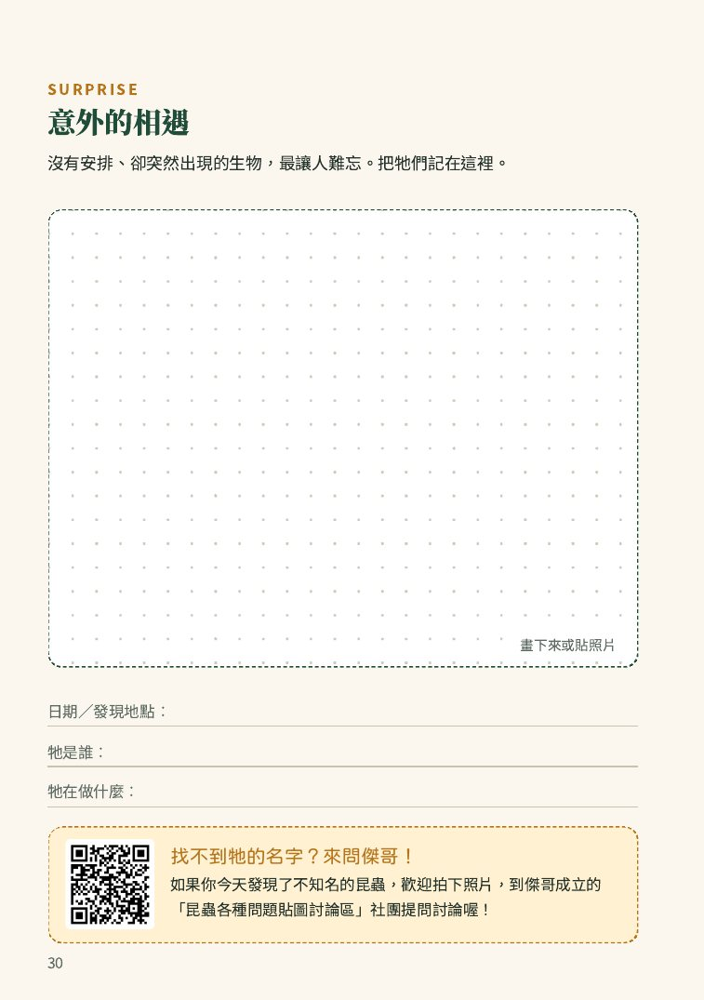
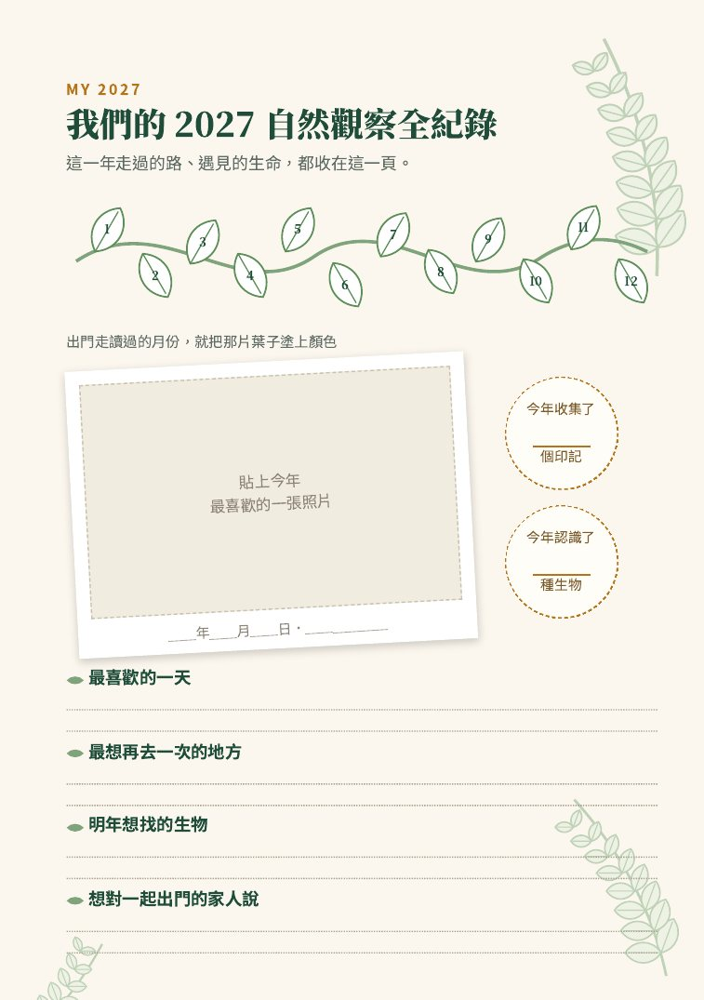
看看傑哥挑的當月主角、建議去處，還有書中哪幾頁可以先讀。
照著「找找看」的小任務出發。遠方的物種，就先寫進夢想清單。
蓋紀念章、貼門票、拓印一片落葉，寫下日期、地點和最驚喜的一刻。
傑哥身上帶著特別設計的「傑哥行動章」，遇到他記得請他蓋章或簽名。
拍下照片，到傑哥成立的昆蟲社團提問，大家一起幫你認。
十二個月的足跡和印記，就是全家獨一無二的真實自然圖鑑。
購買通路
以下通路的首刷書都隨書附贈《2027 我的自然觀察誌》，送完為止。
首刷售完後的版本不再附贈別冊。
開箱推薦
（推薦文字待補，約 30–50 字）
（推薦文字待補，約 30–50 字）
（推薦文字待補，約 30–50 字）
實體活動｜冬日熱血親子遊
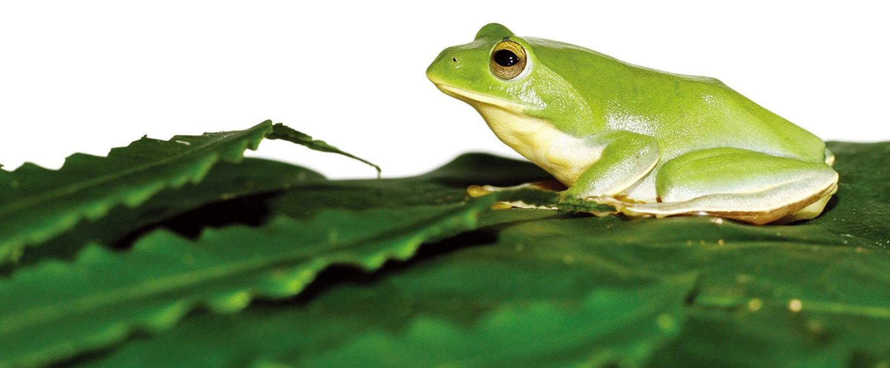
親子夜觀｜限額 20 人
太陽下山，森林才正要換班。傑哥親自帶隊，從黃昏走進天黑：在福州山看臺北盆地一盞盞亮起燈火，再打著手電筒鑽進步道，循著聲音找大赤鼯鼠、冬季限定的臺北樹蛙，還有藏在樹皮和草叢裡的夜行昆蟲與蜘蛛。
大人和孩子組成偵探小隊，一起蹲下來、一起屏住呼吸、一起發出「找到了！」的歡呼。這一晚的發現，會是全家人共同的秘密。
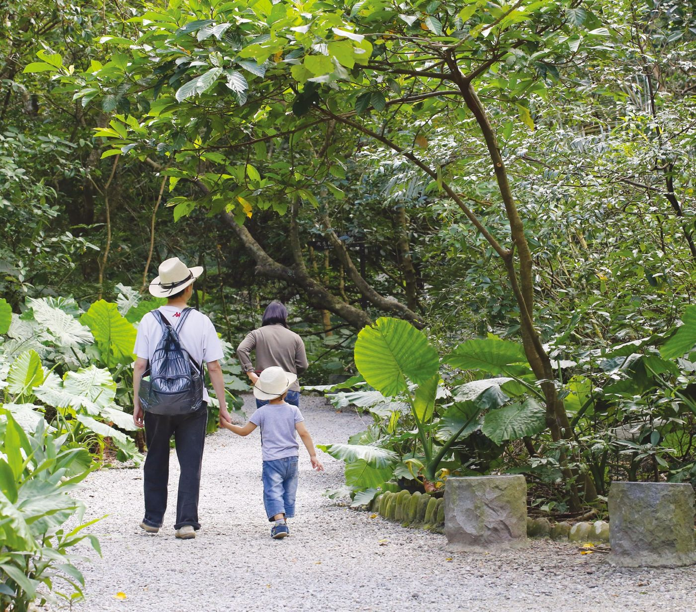
新書分享會｜大朋友小朋友都歡迎
阿傑寫這本書，是想把多年來在山林裡累積的驚喜，交到每個家庭手上。比起記住多少物種的名字，他更在意大人和孩子能不能一起出門、一起好奇、一起被一隻小小的生命感動。
這個下午，阿傑會分享他如何陪孩子成為小小探險家、出門前怎麼準備、在野外遇到困難時怎麼化挫折為樂趣，還有書裡沒寫完的雨林故事。歡迎大朋友小朋友一起來聊聊、一起提問。
書摘搶先看
臺北樹蛙富陽自然生態公園｜書中 p.16–19
臺灣北部｜臺北市大安區
對許多人來說，富陽只是臺北市區的一抹綠意；對阿傑而言，這裡是他的生態啟蒙地。小時候住在捷運麟光站附近，放學後他總往當年的亂葬崗、今天的福州山跑，那裡少了人類打擾，臺灣欒樹上爬滿扁鍬形蟲。當年的軍營，如今成了林相完好的富陽自然生態公園：盛夏的烏桕樹上找得到渡邊氏長吻白蠟蟬，入夜循著叫聲能看見大赤鼯鼠滑翔，也是觀察保育類臺北樹蛙的好地方。
〈從富陽到福州山〉書中 p.16–21
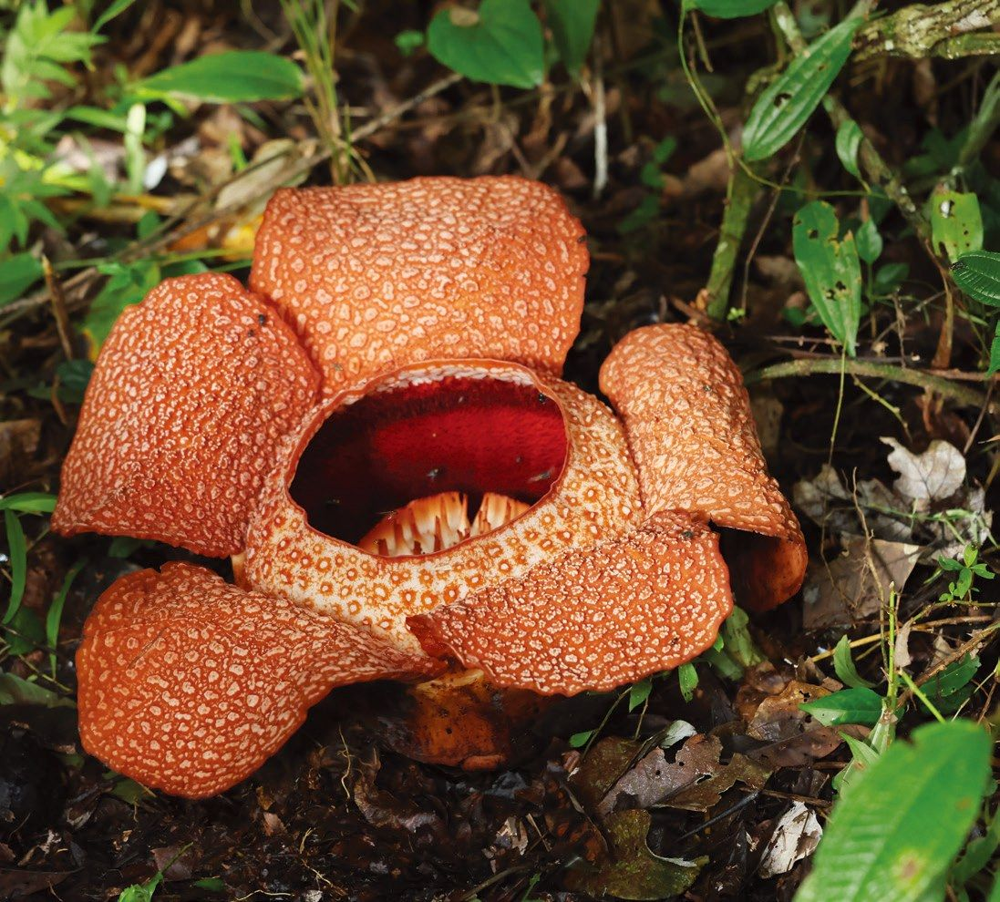
大王花婆羅洲神山低海拔研究站｜書中 p.180–189
馬來西亞｜婆羅洲（東馬）
國小四年級，阿傑在一本百科全書裡讀到：東南亞雨林有種沒有根、莖、葉的植物，會開出血紅色的巨大花朵，散發腐肉惡臭。這顆「食人花」的種子，在他心裡埋了四十多年。後來他在神山低海拔研究站一次次遇見大王花：它全寄生在崖爬藤裡，花苞要長十個月到兩年，像一顆「黑高麗菜」，綻放後的花期卻十分短暫。阿傑還帶著熱顯像儀實測，發現它真的會微微「加溫」，把氣味送得更遠。
〈婆羅洲大兜蟲、大王花〉書中 p.180–189
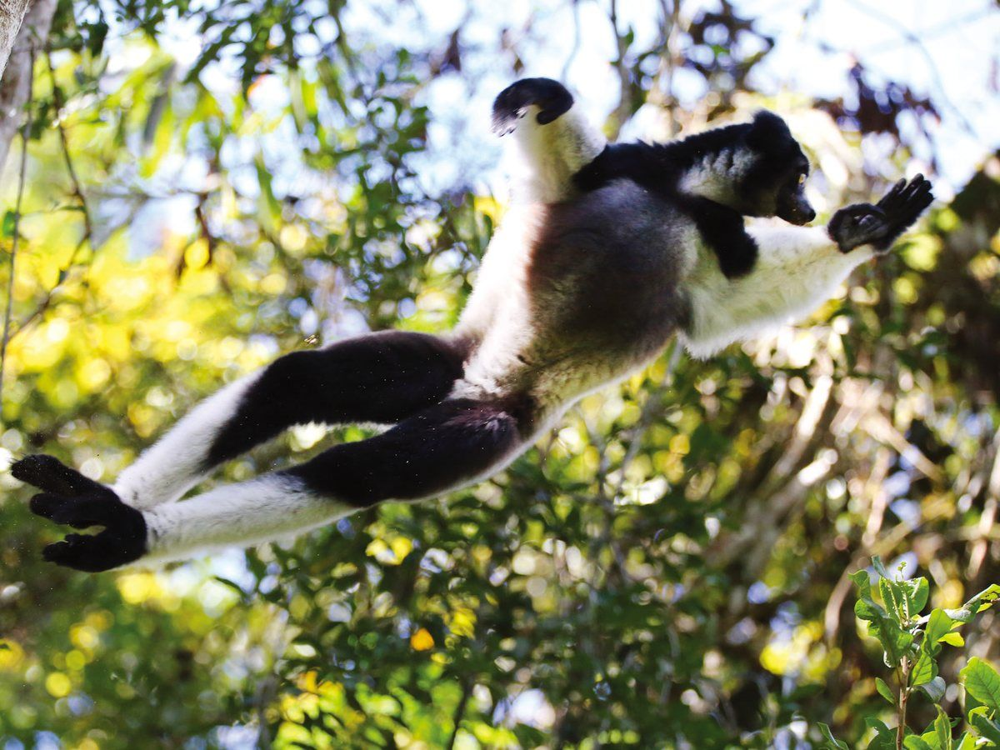
大狐猴安達西貝－曼塔迪亞國家公園｜書中 p.212–213
非洲｜馬達加斯加
朋友一句「你怎麼好像都在亞洲？」，讓阿傑把跨出亞洲的第一站選在馬達加斯加。進入拉努馬法納國家公園，要另外聘請由村民轉型的生態導覽，三小時只要台幣五百元。嚮導指著一片垂掛的枯葉，湊近才看見撒旦葉尾守宮的眼睛。到了安達西貝，兩隻大狐猴仰頭唱和，阿傑悄悄放低相機改用手機錄音，錄著錄著，眼淚就止不住地流了下來。
〈葉尾守宮、大狐猴、猴麵包樹、長頸捲葉象鼻蟲〉書中 p.206–217
書籍目錄
作者序｜前言
爸媽如何引導孩子，在山林中發掘無限潛能？
文｜熱血阿傑 黃仕傑
一孩子天生就是觀察家
現今的我，經常帶領親子自然觀察課程，足跡遍及台灣郊山、深山步道，甚至延伸至世界各地的熱帶雨林。我發現，小學階段的孩子對世界充滿好奇，不僅問題與想法繁多，執行力更是驚人。
我的兒子剛滿七歲時，也正處於這個學習力最旺盛的黃金期。我們常一同上山下海或在庭院觀察生態，他也在耳濡目染下喜歡「拈花惹草」與野外尋蟲。
有時，兩人會蹲在草叢中屏息等待，壓低音量交頭接耳。這看似溫馨的時光，對話過程卻常讓我絞盡腦汁⸺因為要將抽象的生態知識，轉化為孩子能理解的語言，確實需要花費一番心思。
孩子天生具備敏銳的觀察力，總能發現大人忽略的細微事物；然而，這些珍貴的天賦在我小時候卻常被長輩視為沒用的玩物。
當時家長只著眼於紙上成績，當我想學繪畫與手作時，長輩卻安排我學樂器以便導師監督功課，對自然與昆蟲的熱情更被冷漠否定。
當好奇心長期遭到壓抑，取而代之的往往是自暴自棄。我曾陷入「反正努力也沒用」的心態，成績一落千丈，甚至在讀高職時因課業與品德問題遭到退學。
所幸歷經社會歷練與退伍後的沉澱，我在精品業務工作中找到歸屬感，隨後更因緣際會重新接觸昆蟲生態、深入雨林探索，並出版書籍與繪製插畫。這時我才驚覺，這正是我童年最渴望做的事。
雖然命運讓步伐繞了一大圈，但這些歷練讓我更加珍惜現在，能帶領有興趣的孩子透過觀察大自然來啟發思考，已成為我人生最大的盼望。
記得有一次帶領親子團進行生態觀察，清晨的森林裡充滿豐富的聲響。我們圍坐在石階上，將耳邊聽到的聲音逐一用紙筆記錄，並討論聲音的來源與意義。從清脆鳥鳴到潺潺水流，最後我們在草叢中找到了摩擦雙翅發聲的螽斯。
每位家長與孩子都無比專注地聆聽與記錄。此時的森林就像一座宏偉的國家劇院，大自然是總指揮，林中萬物則是各具特色的演奏者。只要走進這座劇院，隨時都能聽到此起彼落的自然樂章。
此時的森林就像一座宏偉的國家劇院，大自然是總指揮，林中萬物則是各具特色的演奏者。
我特別喜歡帶著大家尋找「聲音中的聲音」。正因為大自然聲響交織疊加，更需要極度專注才能從紛雜背景中指認細微動靜。孩子們天馬行空的聯想，不僅能鍛鍊聽力與專注力，更是培養邏輯分析能力的絕佳過程。
自然界處處是驚喜，蟲鳴鳥叫、溪水奔流、落葉輕響都有著獨一無二的頻率，是賦予我們的最佳學習素材。孩子的聽力往往比大人敏銳，常能捕捉到微小聲響，我總是陪著他們循聲探源並給予適當引導。
有時我也會收集乾燥落葉，讓孩子透過捏碎或敲擊體驗聲音多樣性，自然而然地愛上大自然。那場活動結束後，一位家長特地向我道謝，感嘆平常缺乏耐心、讓學校老師頭痛的兒子，今天居然能全神貫注地在交錯聲響中找出隱藏聲音，彷彿找到了真正熱愛的方向。
看著家長眼中滿溢的喜悅與陪伴孩子走向戶外的決心，我感到無比欣慰。如果家長願意去理解並支持孩子的興趣，讓大自然成為陪伴成長的養分，那麼這個孩子將會是世界上最幸福的人。
二爸媽的陪伴與引導
許多家長帶孩子進行自然觀察時，經常無意間落入「幫孩子找、幫孩子學」的盲點。看見昆蟲時的直覺反應往往是直接指給孩子看，甚至動手抓來遞過去。這種看似尋常的舉動，其實悄悄剝奪了孩子尋找與親自發現的喜悅。
讓孩子獨立尋找觀察對象，本身就是極佳的學習方式。面對繁茂的枝葉，孩子須透過眼力比對葉片的形狀、顏色與大小，在腦海中排除純植物特徵；接著尋找昆蟲線索，例如六隻腳的輪廓或葉片食痕，最終精準定位目標。
你可以巧妙引導與適時提示，化挫折為親子互動樂趣。
若一時未果也無妨，可引導孩子重新審視。有了前次經驗，孩子能將已知資訊融入思考，大幅增進搜尋信心。家長亦可適時給予如顏色、形狀等關鍵提示，不僅能加深物種特徵記憶，更能增添親子互動樂趣。
不少家長因擔心髒污或細菌，過度限制孩子接觸自然，甚至在孩子滿懷喜悅分享新發現時，嫌棄那是「沒用的東西」而不予理會。
長此以往，不僅會讓孩子因缺乏正面回應而不再分享，更可能打擊他們的自信心，讓孩子誤以為自己的觀察與發現毫無價值。
育兒態度中常見的現象，是許多人在室內外看到蟑螂時便會驚慌尖叫、四處逃竄。這種極端恐懼往往源自大人的示範或既定印象。
事實上，蟑螂本身並非多可怕，只是氣味與外觀較不討喜；然而，家長高亢的驚慌反應會深深烙印在孩子心中，讓孩子在甚至還不懂得何謂蟑螂時，便學會了「看見就要驚恐逃跑」的反射動作。
餐敘時兒子意外抓著一隻美洲蟑螂開心地前來分享，嚇得在場眾人鴉雀無聲，屏息觀望。
此時，身為家長的我選擇平心靜氣與兒子對話，溫和引導他安頓昆蟲並確實將手洗淨。這場突如其來的「現場震撼教育」，讓眾人深刻體會到：面對未知與恐懼時，大人的從容與身教，才是引導孩子學習的最佳典範。
面對未知與恐懼時，大人的從容與身教，才是引導孩子學習的最佳典範。
成長過程中，「尋找答案」是不可或缺的關鍵能力。
然而，部分家長因擔心孩子落後，將生活起居與大小需求一手包辦，甚至代做功課。這種作法看似是愛，實則削弱了孩子的生活體驗與探索能力。想培養孩子的獨立性，首要之務便是學會適時放手，讓他們嘗試「自己來」。
當孩子分享新發現時，應放下手邊工作專注陪伴，討論搜尋過程與內心感受，使觀察記憶更深刻。此外，在日常生活中適時進行隨機提問，引導孩子回想曾見過的動植物特徵，能有效鍛鍊其靈活的反應能力與思考邏輯。
面對工作繁忙無法即時給予解答的情況，父母可以利用空閒時間陪孩子在家翻書，或是安排週末的書店巡禮。
透過這些行動，能讓孩子自然習慣沉浸在濃厚的閱讀氛圍中，正如書本永遠是通往廣闊知識世界最棒的鑰匙。
面對孩子提出的艱深問題時，若遇到大人也不知解答的狀況，正是最佳的合作契機。此時可與孩子一起翻閱圖鑑、上網查詢或向專家請教。
不急著直接給予現成答案，陪伴孩子完整經歷尋找與探索的歷程，不僅能讓求知充滿樂趣，更能助其在未來真正學會獨立思考與自立。
三打造你的自然生態之旅
當假期想帶著家人外出走走，卻沒有預設的觀察目標且時間緊湊時，鄰近的公園或郊山步道便是絕佳選擇。這些地點不僅有專人定期維護、公共設施完善，能確保全家大小的出遊安全，園區內廣植的原生植物與園藝花卉，也經常吸引昆蟲與鳥類穿梭其中，非常適合安排一場輕鬆的半日輕旅行。
若想深入原始森林，欣賞高大樹木的附生植被及溪邊生態，出發前的功課不可少。這類景點多位於偏遠山區或國家森林遊樂區，出發前務必確認路況並留意氣象預報，切忌在天候不佳時勉強前往。若有特定的觀察目標，更需事先了解其出沒季節與棲地特性，以免興致勃勃前往卻空手而回。
當行前各項資訊皆已備妥，即可依據路程遠近來安排一日遊或多日行程。由於部分景點路途遙遠、甚至需跨縣市移動，為了確保旅程舒適愜意，規劃時務必將車程時間彈性納入考量，避免行程過於緊湊而影響與家人同遊的品質。
食
進行自然觀察時，首要考量便是飲食補給。由於戶外不像市區隨處可得便利商店，且長時間步行與肢體勞動會消耗大量體力，出發前務必妥善準備糧食：
輕旅行 適合攜帶巧克力、餅乾、麵包等簡便乾糧。
一日遊 若前往具備飲水機的國家森林遊樂區或生態農場，可考慮攜帶碗裝泡麵；若開車出行，亦可備簡易瓦斯爐燒水。
多日遊 應提前制定「食材採買計畫表」，以「天數乘以三餐」精算份量，若有夜間觀察需求也需將宵夜納入規劃。
水分補充 建議全家每人自備水壺，從家中煮沸開水出門，兼顧衛生與環保。切勿直接飲用野外山泉水，以免感染細菌或寄生蟲卵；若想品嚐，應帶回煮沸或在園區管理中心加滿。
衣
戶外環境常在短短數小時內面臨烈日、降溫或豪雨等不確定因素。為應對野趣並確保安全，穿著與裝備配置建議如下：
穿著提醒 務必穿著「長袖衣褲」（防蚊蟲叮咬與刺植物刺傷），建議以舒適、低彩度，不反光的衣物為主。
防蜂避忌 避免使用香水或濃郁香味保養品，不穿著黑色衣物，並跟蜂巢保持距離。
配件與鞋靴 建議配戴具備遮頸布的帽子以防曬傷及蟲落頸部；鞋子應選擇舒適的運動鞋或多功能戶外鞋（尤以中高筒為佳以保護腳踝），絕對禁止穿著拖鞋。
住
若行程規劃超過一天，尋找合適的住宿地點便成為重中之重。由於帶領家人同行時必須將舒適度與民生需求納入考量，傳統的飯店、旅館或民宿通常是多數人的首選；其中，許多優質民宿不僅提供三餐，還結合了生態導覽與手作體驗，對於沒時間詳細規劃行程的家庭而言非常便利。
另一方面，深受孩子喜愛的「搭帳篷露營」能讓家人一同動手烹調、在星空下露宿，並在協力建構營地的過程中收穫無法取代的寶貴經驗。挑選營地時建議以設有完善衛浴設施的郊區公園或專門營地為主，部分業者亦提供帳篷租借，便於家庭進行輕裝體驗。然而，「安全」始終是最高原則，務必避免在河床、溪谷、懸崖或易落石區搭營，以防範突發的天候與地質風險。
行
結合台灣便利的公共交通網絡、環保趨勢與油價考量，搭乘大眾運輸工具出遊是相當推薦的環保選擇。雖然有些人對搭乘公車或火車進行生態旅遊抱持觀望態度，但實際體驗證明，只要預先查詢車次並提早訂票，不僅實惠省力，還能在回程時好好放鬆休息，特別適合「單一地點」的深度旅遊。
相對地，若是規劃「多個地點」的漫遊行程，騎車或開車則具備絕對優勢，不僅能隨車攜帶較多裝備與行李，還能享有極高的機動性，面對突發狀況或臨時變更景點時皆能隨時調整。不過，自行駕駛必須特別注意精神狀態，務必充足休息再上路，才能確保全家人的行車平安。
若規劃過夜行程，不論是山莊、民宿或露營地，都必須提前預訂並詳細了解周邊設施與安全性；在交通方面，則應事先確認沿途路況、車況以及加油站位置，讓整個生態旅程在安全無虞的基礎上順利展開。
在野外探索時，適當的工具不僅能讓觀察更加深入，更能增添許多趣味。以下是我常帶在身上的「秘密武器」：
到了戶外，我常會帶上圖畫紙與畫筆，和孩子一起天馬行空地創作。無論是描繪風景、昆蟲、植物，還是純粹的抽象線條都無所謂，重點是給孩子自由揮灑的空間。這時我們可以適時引導：「你畫的是什麼呢？」、「這個顏色好可愛喔！」，聆聽孩子的想法並給予讚美與鼓勵。
這是戶外觀察時不可或缺的利器！除了能記錄親子互動與旅遊點滴，遇到驚喜發現的物種時更能即時拍下。除了靜態攝影，善用錄影功能來捕捉動物的動態行為，日後回顧時更能將精彩瞬間真實重現。
在野外觀察時常需要「手腳並用」，如果手上還提著外套、水壺會非常不便。後背包是我長年在野外活動的標準配備，只要將乾糧、衣物、水壺與雜物統統交給它，就能釋放雙手，讓行動更加靈活。
觀星、賞鳥、觀察蝴蝶或高處的植物時，單靠肉眼能看到的範圍相當有限。許多物種活動於高大樹冠層或遠處，就算發現了也難以看清細節。這時若有望遠鏡輔助，就能將遠處的景象拉近，那種放大細節的視覺震撼，更能大大激發孩子的探索興趣。
微小的花朵構造或小昆蟲非常精緻，但肉眼觀察不易。想要進一步觀察構造時，放大鏡就能派上用場。透過凸透鏡的放大效果，能讓微小物體的細節加倍清晰，使微觀世界不再遙不可及。
常有人問我：「手電筒不是夜間觀察才需要的嗎？」其實，手電筒是我白天也會隨身攜帶的秘密武器！白天雖然光線充足，但在密林樹蔭下、樹洞裡或岩壁縫隙中，光線往往不足。這時只要適時補光，就能看清躲藏其中的物種，這也是我常能找到特殊生物的訣竅所在。
只要出門，我一定會在背包底層備著雨傘或輕便雨衣。山區或戶外的天氣難以精準預測，萬一遇到突如其來的陣雨，沒帶雨具而被淋成落湯雞，甚至因此感冒受涼，可就得不償失了。此外，若山區氣溫驟降，趕緊穿上雨衣也能起到不錯的防風禦寒效果。
因應不同地點與觀察物種的需求，也可以彈性準備：昆蟲觀察網、塑膠空瓶、黑色奇異筆、密封袋、指南針、溫濕度計、棉布手套、備用長袖衣物、小捲尺、鑷子（夾子）、採集小網、小水桶等。這些小物都能幫助我們在探索自然的過程中收集更多資訊，增添無窮樂趣。
四從零開始，隨手記錄
初學自然觀察時，常因昆蟲躲藏、鳥類飛走或不認識植物而感到灰心。阿傑也必須老實說，早期因數位攝影尚未普及、微距相機昂貴且網路資源匱乏，只能靠著翻閱生態書籍、四處查資料以及向專家請教，才逐漸累積出對野生動植物的基礎知識。這證明了每位專家都是從不懂開始摸索，只要有心就能跨越門檻。
相較於過去，現今的環境便利許多。出門時只要備妥相機或智慧型手機，把看到的蟲、魚、鳥、獸、植物通通拍照留存，或透過圖文寫下觀察心得。務必先留下具體的影像與文字紀錄，才能以此為依據，開啟後續的查證與探索之旅。
戶外記錄時會碰到「靜止」的植物與會「動」的動物。針對好動的蟲魚鳥獸，阿傑來提供一套近距離拍攝心法：當發現目標時全體保持靜止，先在原位拍下全景；接著壓低身形、緩慢前進，每跨出一步就拍幾張，拉近距離後再捕捉特寫。這種溫和漸進的方式能讓動物習慣人類的存在，大幅提升拍攝成功率。
拍攝記錄後，便能善用網路豐富的生態社團與討論區進行比對查詢，也能搭配圖鑑書籍與家人一同翻閱。帶著孩子邊查資料邊分享觀察時的點滴與驚喜，不僅能解開對大自然的疑惑，更創造了無可取代的溫馨親子時光。
延伸閱讀
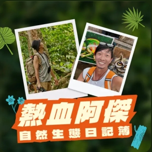
阿傑每週分享臺灣與世界的自然生態，從海底到高山，從身邊的昆蟲聊到遠方的雨林。想先聽聽馬達加斯加的故事，可以從〈EP96｜當個友善、有生態意識的旅人！跟著阿傑到馬達加斯加〉開始。
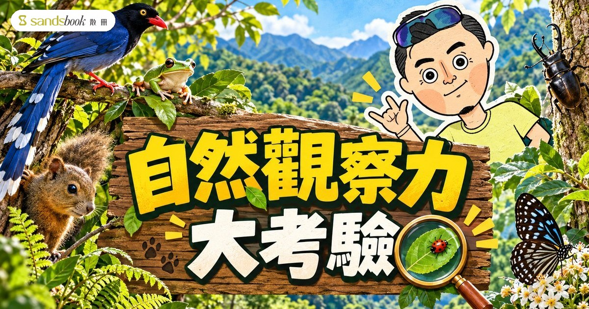
樹枝會走路、枯葉會眨眼，森林裡到處都是偽裝高手。12 道看圖挑戰，考考你能不能一眼看穿！答完揭曉你的觀察力等級：是剛探出頭的鼠婦，還是能看穿偽裝的葉尾守宮？
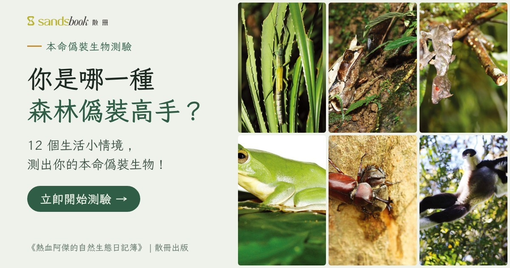
開會時希望自己隱形？假日只想躺平不動如山？12 個生活小情境，測出你的本命偽裝生物：是一受驚就裝死的竹節蟲，還是一開口就讓人感動到落淚的大狐猴？測完還能知道去哪裡找到牠，順手傳給朋友，看看你們是不是最合拍的一對！